生成对抗模型(GAN)
本文最后更新于 2026年4月2日 下午
北京大学信息科学技术学院 生成模型基础(2025秋)的课程笔记
第三部分：GAN
从复杂分布到简单分布
假设随机变量$X$服从极为复杂的分布$Q$，那么要如何从$Q$中生成数据呢？
已知我们有$Q$的分布函数$F(x)$，及其逆函数$F^{-1}(x)$
算法是这样的，先从一个均匀分布中sample出$Z$，然后令$X=F^{-1}(Z) \sim Q$，则有
$P(X<t)=P(F^{-1}(Z)<t)=P(Z<F(t))=F(t)$
这证明了任何复杂分布的样本都可以由简单分布生成
前面讲过，VAE具有浅层性，无法go deep，所以生成的图片没有那么"real"
如果要通过复杂函数从满足正态分布的noise中生成图像，那么更好的做法是下面的GAN(Generative Adversarial Network，生成对抗网络)
GAN是一种隐式模型，让我们看看显式模型和隐式模型都有哪些区别
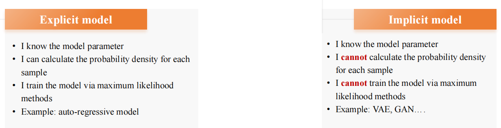
显式模型可以计算概率密度函数，因此可以通过MLE方法来训练，隐式则不能
一般来说nlp更常用显式，cv更常用隐式，但并不绝对
那么对于GAN这种隐式模型来说，要如何评估生成数据与真实数据之间的差距呢？
衡量差距的办法
对于两个点，可以用最简单的欧几里得距离，$d=|x_{A}-x_{B}|$
对于$S_{A}$和$S_{B}$两个点集，可以用下面的办法
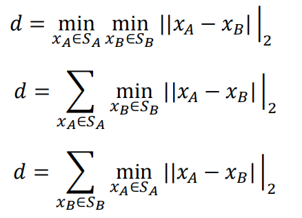
如果是对于两个分布呢？我们引入f-散度的概念
假设分布$P(x)$，$Q(x)$的概率密度函数分别为$p(x)$，$q(x)$
f函数需满足如下条件：
定义域$[0,+\infty]$，值域$[-\infty,+\infty]$
凸函数，非负，有限
$f(1)=0$
那么分布$P$和$Q$的f-散度定义为$D_{f}(P||Q)=\int f(\frac{p(x)}{q(x)})q(x) dx$
首先证明f-散度的非负性
f为凸函数，由$Jansen$不等式，$D_{f}(P||Q)=\int f(\frac{p(x)}{q(x)})q(x) dx \ge f(\int \frac{p(x)}{q(x)}q(x)dx)=f(\int p(x)dx)=f(1)=0$，得证
一种特殊情况：当$f(t)=tlogt$时，首先满足f函数的定义
代入f-散度公式中，此时$D_{f}(P||Q)=\int p(x)log(\frac{p(x)}{q(x)})dx=KL(p(x)||q(x))$，即为KL散度！
另一种特殊情况是当$f(t)=\frac{1}{2}|t-1|$时，代入可得$D_{f}(P||Q)=\frac{1}{2} \int |p(x)-q(x)|dx$，这被称作total variation distance
还有一种情况，当$f(t)=-(t+1)log\frac{t+1}{2}+tlogt$时，代入可得$D_{f}(P||Q)=KL(Q||M)+KL(Q||M)$，其中$M=\frac{P+Q}{2}$，这被称为Jensen-Shannon散度，简称JS散度
GAN
我们的GAN模型就是采用了这种看起来十分复杂的JS散度，目标是将其最小化
我们认为$P \sim P_{\ast}$，$Q \sim P_{\theta}$，其中$P_{\ast}$为真实数据分布，$P_{\theta}$为模型生成的分布
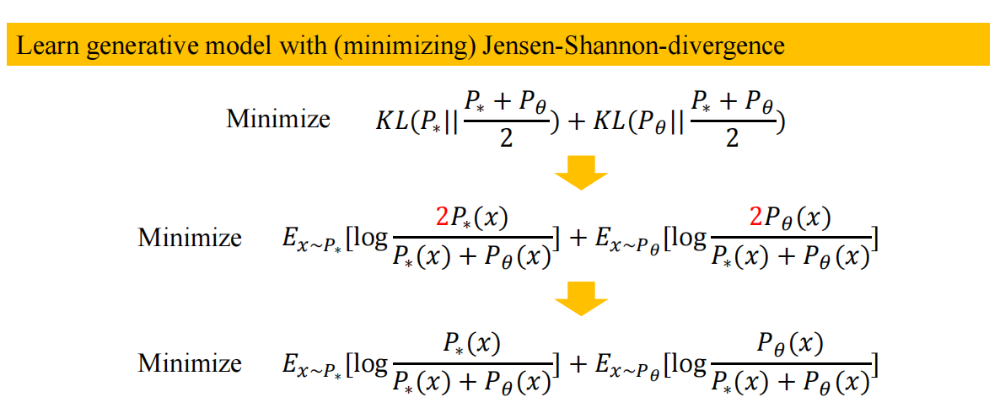
如图，即为最小化上面的JS散度
然而，无论是估计$P_{\ast}$还是$P_{\theta}$，都有不小的难度
$P_{\ast}$为ground truth真实分布，难以获取
$P_{\theta}$是从极复杂的神经网络中生成的，也难以估计
但是我们注意到
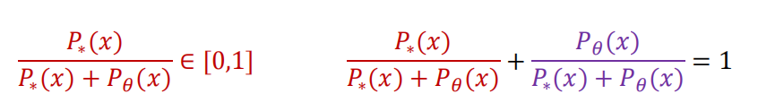
所以如果$\frac{P_{\ast}(x)}{P_{\theta}(x)+P_{\ast}(x)}$趋近于0，那就说明数据$x$几乎没有可能来自于$P_{\ast}$，大概率来自$P_{\theta}$，反之若其趋近于1，则$x$大概率来自$P_{\ast}$
那么我们就可以构建一个二元分类器$D_{\theta}(x)=\frac{P_{\ast}(x)}{P_{\theta}(x)+P_{\ast}(x)}$，来判定$x$到底是从真实分布还是模型生成的分布中采样，我们的目标就变成了
$Minimize$ $E_{x \sim P_{\ast}}[logD_{\theta}(x)]+E_{x \sim P_{\theta}}[log(1-D_{\theta}(x))]$
上式可以进一步化简，由于$x$是从满足标准正态分布的noise $z$中生成而来的，设生成函数为$G_{\theta}$，原式变为
$Minimize$ $E_{x \sim P_{\ast}}[logD_{\theta}(x)]+E_{z \sim N(0,I)}[log(1-D_{\theta}(G_{\theta}(z)))]$
于是便有了$D_{\theta}$与$G_{\theta}$分别的训练过程
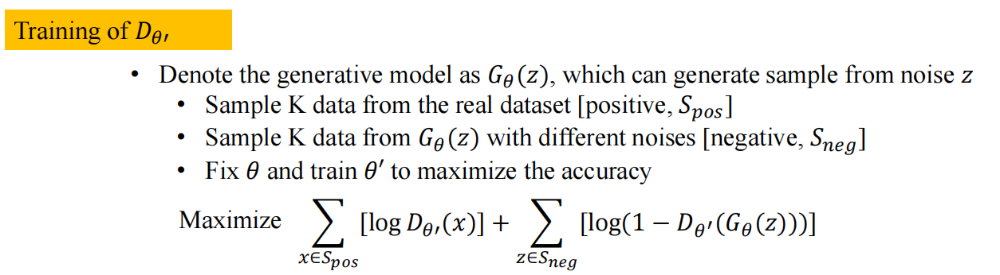
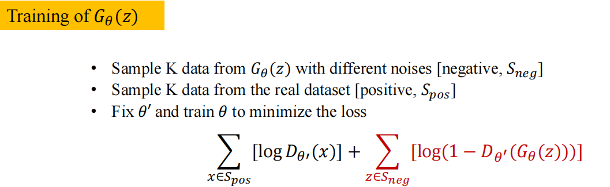
通常我们称为为Discriminator判别器，G为Generator生成器
判别器的目标是区分出样本到底是真是假，是真实数据还是模型生成的数据
而生成器的目标是以假乱真，希望生成“很像是真实数据的样本”骗过判别器
于是总的优化目标即为
$\min_{G_{\theta}} \max_{D_{\theta}} E_{x \sim P_{\ast}}[logD_{\theta}(x)]+E_{x \sim P_{\theta}}[log(1-D_{\theta}(x))]$
这就是所谓的对抗训练，颇有博弈论中minmax博弈的风采，判别器和生成器在无数次对抗中互相竞争共同进化，又有种自然选择的魅力
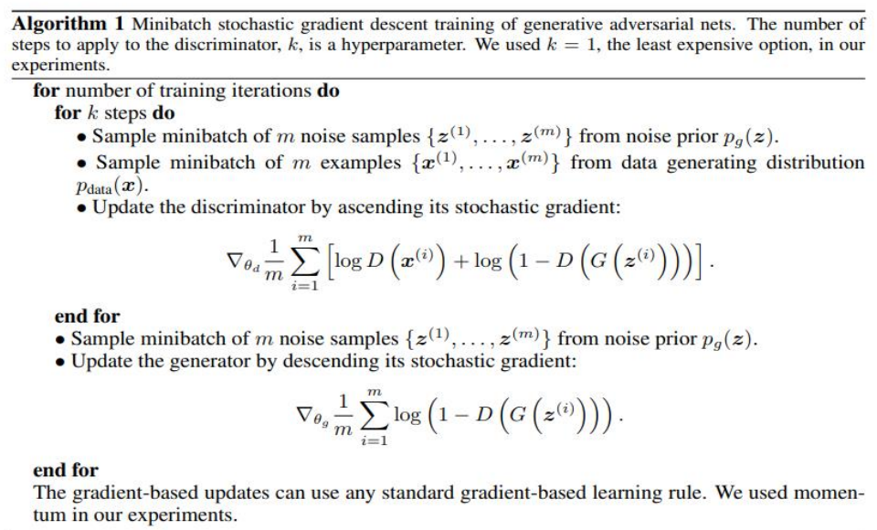
上面即为GAN原始论文的训练方法，先训判别器再训生成器，经典的梯度下降不过，金无足赤人无完人，强如GAN这样的模型也难免存在问题，由于其中存在minmax，非凸也非凹，不好优化，而且生成器与判别器需要兼容配置，能力匹配，不能出现一个远强于另一个的情况。更重要的是难以避免模态坍缩(mode collapse)问题，即生成器为了骗过判别器无所不用其极，专注于生成一种样本，这样在某个特定领域loss很小，判别器不易识破，然而这并不代表生成器就很厉害，恰恰相反它几乎无法胜任多模态任务！
WGAN
因此我们需要对GAN进一步优化算法
一个灵感：当$P$和$Q$分布相同时，对于任意函数$f$，我们有
$E_{x \sim P}[f(x)]=E_{x \sim Q}[f(x)]$
以此为启发，我们可以定义$P$和$Q$两个分布之间的距离为
$D_{F}(P,Q)=\sup_{f \in F} |E_{x \sim P}[f(x)]-E_{x \sim Q}[f(x)]|$，此处的$F$为所有1-Lipchitz函数组成的集合，这个距离被称作Wasserstein distance
补充：1-Lipchitz
$|f(x)-f(y)|\le |x-y|$ $\forall x,y$ 则称$f$为1-Lipchitz函数
上面的式子可以进一步化简
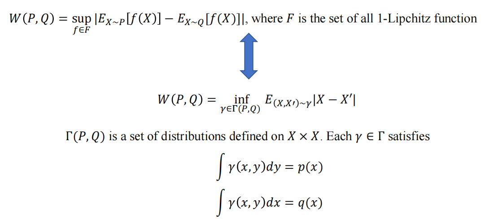
其中$\gamma(P,Q)$为联合分布，满足其边缘分布为$p(x)$和$q(x)$
$(X,X’)\sim \gamma$表示从联合分布中抽取一对随机变量，然后对后面的$|X-X’|$求期望
这个式子初见似乎不太好理解，我们可以通过一个生动形象的故事来说明：愚公移山(bushi)
假设山的泥土原本的分布为$p(x)$，愚公想要在移山之后把分布变为$q(x)$，那么$\gamma(x,y)$即为愚公想从$x$位置移到$y$位置的泥土量
假设从$x$到$y$移动单位的土需要花费$cost(x,y)=|x-y|$，即有下式
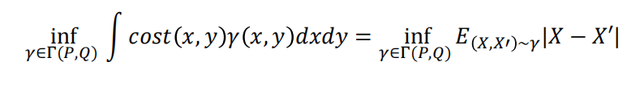
因为这个生动形象的故事，Wasserstein distance也被称作移山距离
我们用刚学到的Wasserstein distance代替原有的GAN，即得到了升级版的WGAN
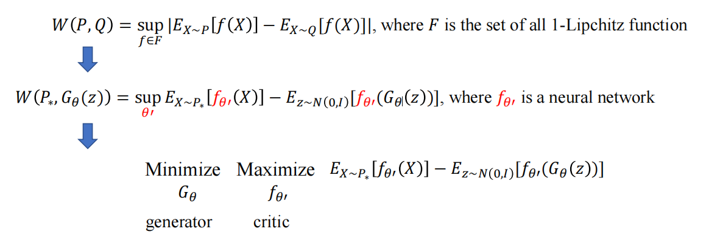
由于所有满足1-Lipchitz的函数太多，无法一一枚举，所以我们考虑使用神经网络，其中$\theta’$为参数，那么$f_\theta’$即为所有满足条件函数的集合，由神经网络的对称性，绝对值也可以去除
然而，神经网络终究与1-Lipchitz函数族无法等同，所以我们仍然得对函数进行一些约束，即对函数进行weight clipping，本质就是通过剪切让神经网络生成的函数更接近1-Lipchitz函数，由于背后数学原理较为复杂，笔者高数水平有限，很遗憾这里无法详细证明，感兴趣的读者可自行阅读相关论文
ppt内容：只有“粗糙的”数分定理(有界闭集里的连续函数，其Lipchitz系数有限)
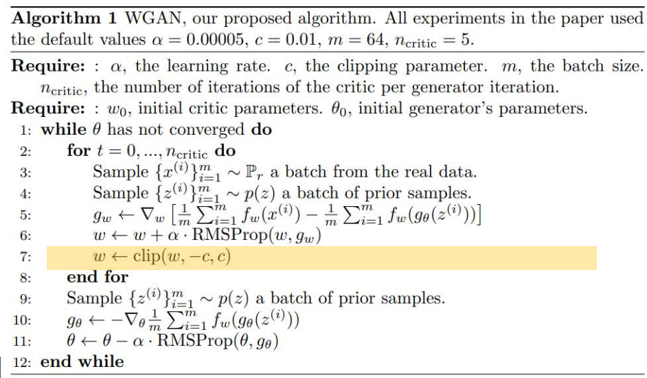
然而weight clipping只能确保Lipchitz系数有限，不可确保其系数为1，所以还需采取gradient penalty方法
一个可微函数为1-Lipchitz当且仅当其梯度的范数处处为1
所以我们要尽可能限制在导数接近1的那些神经网络上进行优化，于是优化目标变成了
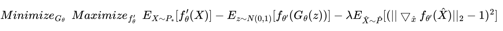
总结：GAN的思想
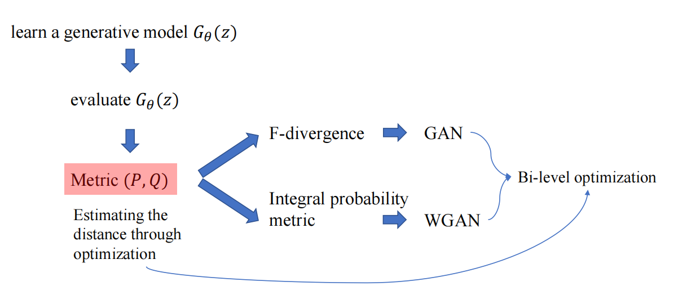
GAN和WGAN让“对抗”在ai领域中变得极为重要，以至于据说当年有个流行语，叫做“今天你GAN了吗”（）以此为基础又引出了adversarial attack，adversarial domain adaptation等方法，篇幅所限这里就不再详细赘述了，留作拓展~